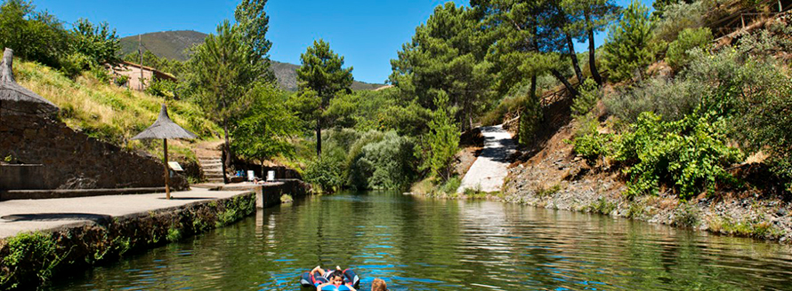

Castillo de Hurdes
It is at comarca Las Hurdes in the north of Cáceres. Las Hurdes used to be one of the most isolated and poorest parts of Spain. Nowadays it has developed conveniently, because it has some beautiful and traditional little villages, with better means of communication, but surrounded by nature. Look more information in Wikipedia.
Castillo is a very small village (less than a hundred people) depending on a relatively bigger village, Pinofranqueado. It is not a very beautiful village, but it has a lot of traditional little houses. You don’t have big restaurants, it has just a bar where you can take anything you want or buy food to prepare it at home. If you need more restaurants you have to drive to Pinofranqueado or Caminomorisco.